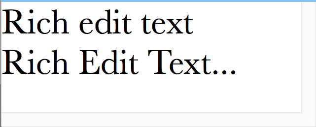
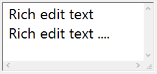

Rich Edit Control
A rich edit control is a window in which the user can type and edit formatted text. When the user clicks the mouse in a rich edit control it displays an I-beam cursor signaling that the control is focused. While a rich edit control has the keyboard focus, the user can use the keyboard to enter text or edit the existing content. Editing keys include the BACKSPACE, DELETE, TAB and arrow keys. The user can also use the mouse to select characters to be deleted or to select the place to insert new characters.
Rich edit controls are similar to multi-line edit controls, but they have the following additional features:
- The size of their content is practically unlimited because they can contain up to LONG_MAX/2 bytes of text. (The size of the content in multi-line edit controls is limited to 32K.)
- Their fonts are not restricted to the standard dialog item fonts of DG as in case of other controls. Fonts with arbitrary size and face name can be assigned to rich edit controls.
- The user can enter tabulator (TAB) characters into them.
- The current selection in them can be set and retrieved from program code.
- They have a built-in text searching feature.
The above features qualify rich edit controls for using them as text editors in dialogs.
-
 
Item type
- DG_ITM_EDITTEXT
Subtype
- DG_ET_RICHEDITTEXT
Scroll flags
-
Value Meaning DG_ET_HSCROLL Rich edit control with horizontal scrollbar. DG_ET_VSCROLL Rich edit control with vertical scrollbar. DG_ET_NOSCROLL Rich edit control without any scrollbars. - DG_ET_HSCROLL and DG_ET_VSCROLL flags can be combined to get both horizontal and vertical scrollbars.
GRC Specification
RichEdit x y dx dy fontSpec [readonlyFlag] scrollMode
where x and y are the pixel coordinates of the upper left corner of the rich edit control, dx and dy are the width and height of the control in pixels. fontSpec declares the size and style of the control's font. scrollMode defines whether the control should have horizontal and/or vertical scrollbars.
Possible values of fontSpec:
-
Value DG constant combination used in DGSetItemFont ExtraSmall DG_IS_EXTRASMALL SmallPlain DG_IS_SMALL | DG_IS_PLAIN SmallBold DG_IS_SMALL | DG_IS_BOLD SmallItalic DG_IS_SMALL | DG_IS_ITALIC SmallUnderline DG_IS_SMALL | DG_IS_UNDERLINE LargePlain DG_IS_LARGE | DG_IS_PLAIN LargeBold DG_IS_LARGE | DG_IS_BOLD LargeItalic DG_IS_LARGE | DG_IS_ITALIC LargeUnderline DG_IS_LARGE | DG_IS_UNDERLINE
Possible values of readonlyFlag:
-
Value Meaning editable The rich edit control is editable. readOnly The rich edit control is read-only.
Possible values of scrollMode:
-
Value Meaning HScroll Rich edit control with horizontal scrollbar. VScroll Rich edit control with vertical scrollbar. HVScroll Rich edit control with both horizontal and vertical scrollbars. NoScroll Rich edit control without any scrollbars.
Messages
-
Message Meaning DG_MSG_CHANGE The text of a text-type edit control or the value of a numeric-type edit control is changed. The message data parameter is always zero for text-type edit controls. For integer- or double-type edit controls this parameter contains the control's previous value or a pointer to a double precision variable holding the previous double value. DG_MSG_FILTERCHAR A key is pressed while the edit control has the keyboard focus. The message data parameter contains the character code of the key pressed. If the application returns 1 in the dialog callback function the character is filtered out. DG_MSG_FOCUS The edit control gains or loses the keyboard focus. The message data is 1 or zero, respectively. DG_MSG_DRAGDROP Drag and drop related event occured. This message is enabled by default for edit controls. Edit controls can be both drag source and target.
Modification Flag
DGRichEditSetText, DGRichEditCatText and DGRichEditSetTextRange functions can set the rich edit control's modification flag except if they are called when handling the DG_MSG_INIT message in the dialog callback function. When the user enters or edits the text of a rich edit control, the modification flag is also set but the control does not send DG_MSG_CHANGE message to the dialog callback function. Use DGModified or DGResetModified to retrieve or reset (clear) the state of the modification flag.
Remarks
The text of a rich edit control can be set and altered by using DGRichEditSetText, DGRichEditCatText and DGRichEditSetTextRange functions. To retrieve the whole content or only a specified range of characters use DGRichEditGetText or DGRichEditGetTextRange, respectively. If you set the text of a rich edit control and the end-of-line markers are not the platform specific ones (CR on Macintosh, CRLF on Windows), DG automatically converts end-of-line markers in the text before sets it to the control. When you retrieve text by DGRichEditGetText or DGRichEditGetTextRange, the functions convert end-of-line markers in the text to a given type.
The font of a rich edit control can be specified in GRC and from program code by DGSetItemFont or DGRichEditSetFont. Using DGSetItemFont only the standard dialog item fonts of DG can be assigned to a rich edit control. However, DGRichEditSetFont gives you more control on setting the font of a rich edit control: any font typeface, size and style can be specified by this function. DGRichEditGetFont retrieves the parameters of the font currently assigned to a rich edit control in a DGTEFontData structure.
When a rich edit control has the keyboard focus, the user can enter tabulator characters into the control's text by pressing the TAB key. This feature is unique to rich edit controls. For other types of edit controls the keyboard focus is transferred to the next focusable item in the same situation. The size of a tabulator is measured in characters and one tabulator size is applied to the whole content of a rich edit control. The tabulator size can be set and retrieved by DGRichEditSetTabSize and DGRichEditGetTabSize, respectively. When a rich edit control is created the tabulator size is initialized to 4 characters by DG.
The selection and the caret position in a rich edit control can be changed not only by user actions but from program code, too. Use DGRichEditSetSelect or DGRichEditGetSelect to select a range or retrieve the starting and ending positions of the current selection, respectively. Note that these functions work with character positions instead of byte offsets in a buffer of the content. This can be particularly important on multi-byte systems.
The text length can be retrieved in unicode characters by the DGRichEditGetLength function. If you need to know the number of lines in a rich edit control or the number of characters in a line call DGRichEditGetLineCount or DGRichEditGetLineLength, respectively. The line and character positions can be synchronized by means of DGRichEditGetLinePos and DGRichEditGetLineFromPos.
You can search the whole content or a given range of the content of a rich edit control for a specified text using the DGRichEditFindText function. The function can search the text downwards or upwards. The searching can be case sensitive or case insensitive and you can match whole words, too.
Of course, the standard clipboard operations (cut, copy, paste) work on rich edit controls. After the user selects any part of the content of a rich edit control, the selected data can be copied or cut to the clipboard or replaced from the clipboard. Clipboard operations are initiated by the user when she/he presses one of the usual keyboard shortcuts or chooses the appropriate command from the application's edit menu. On Windows, the user can click the right mouse button on the rich edit control and choose the command from the appearing context menu as well. The application should execute the chosen clipboard command by calling the DGEditTextCut, DGEditTextCopy or DGEditTextPaste function. The selection can also be cleared without copying it to the clipboard by DGEditTextClear. Use DGEditTextUndo to undo the last operation (clear, copy, cut, paste or typing) in the focused rich edit control.
The rich edit control is one of the focusable controls of DG. When an edit control gains or loses the keyboard focus as a result of user actions, the dialog callback function receives a DG_MSG_FOCUS message. The keyboard focus can be set to an edit control from program code, too, by DGSetFocus. To retrieve the control that currently has the keyboard focus use DGGetFocus.
The keyboard focus and the focusable control categories in DG essentially have the same meaning as in the Macintosh operating system (i.e. the same type of controls are focusable in DG and on Macintosh). On Windows, however, more controls can have keyboard focus. Focusable controls of DG form a subset of focusable controls of Windows. The DGSetFocus and DGGetFocus functions work on focusable controls of DG only.
Requirements
- Version: DG 2.2.0 or later
- Header: DG.h
See Also
Dialog item types, Edit Control
Clipboard specific functions, DGGetFocus, DGModified, DGResetModified, DGSetFocus, DGSetItemFont, Rich edit control specific functions, Callback functions
DG_MSG_FOCUS, DG_MSG_INIT
DGTEFontData